Il movimento vitale
Il Qi è il principio vitale che permea l’uomo e, nel suo fluire, forma canali e ramificazioni che sostengono le funzioni corporee.
Studio Olistico Osmosis · Via Orvieto 1 · Roma
Medicina Cinese, Tuina e counseling in un percorso di ascolto: corpo, energia, storia personale e trasformazione.
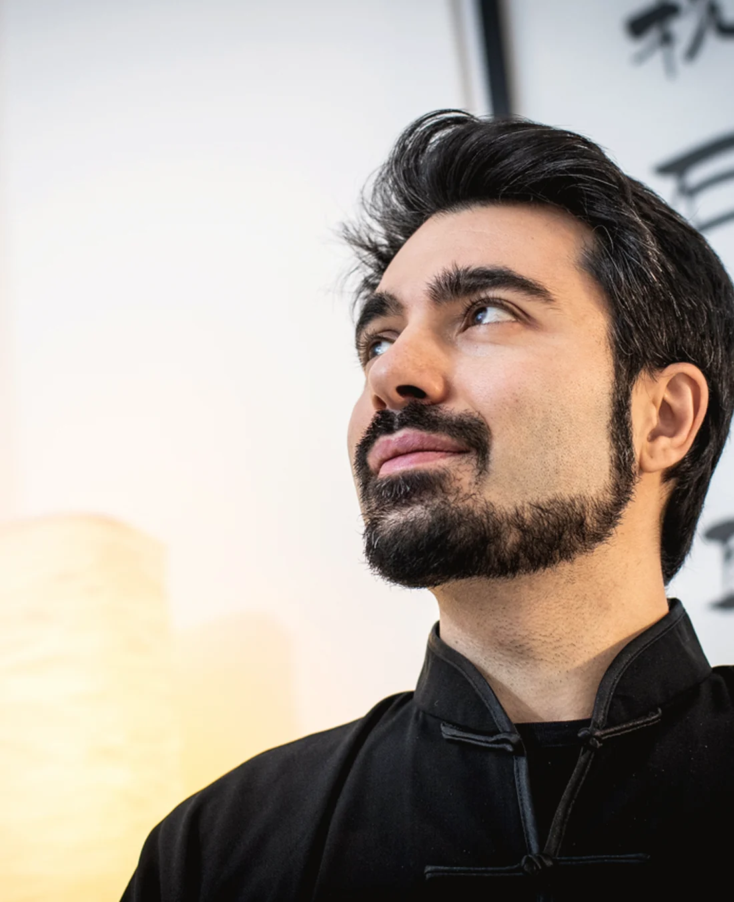
Visione
La Medicina Cinese osserva l’essere umano come un sistema complesso: corpo, emozioni, energia, ambiente, storia personale e qualità della presenza dialogano continuamente.
Il lavoro parte dall’ascolto. In una condizione di malessere, il corpo può indicare la necessità di cambiare direzione, riorganizzare le risorse e ritrovare un equilibrio più sano.
Il Qi è il principio vitale che permea l’uomo e, nel suo fluire, forma canali e ramificazioni che sostengono le funzioni corporee.
Percorso
Ogni incontro parte dalla domanda della persona: ascolto, lettura del corpo secondo la Medicina Cinese, scelta dello strumento e indicazioni pratiche per integrare il lavoro.
Chiedi quale percorso è più adattoDolore, tensione, stanchezza, passaggio personale, bisogno di ascolto o ricerca: il primo passaggio serve a distinguere il sintomo visibile dalla domanda più profonda.
Tecniche
Una lettura chiara delle principali pratiche, con priorità al lavoro manuale e al modo in cui le tecniche dialogano nel percorso.
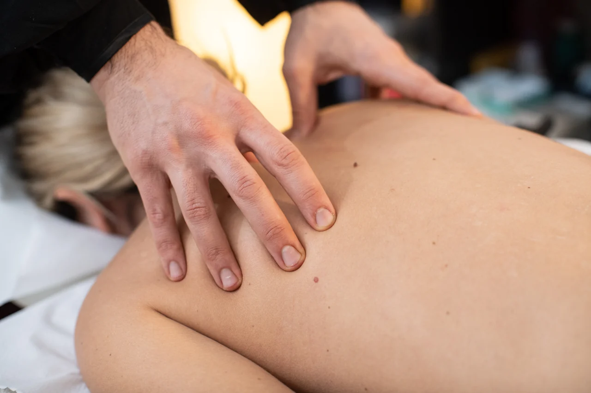
Contatto e manipolazione
Il Tuina, “premere e afferrare”, è una tecnica tradizionale cinese che unisce approccio manuale e strumenti complementari come coppettazione, guasha, moxa e martelletto.
Ha come obiettivo conservare e preservare la salute attraverso il riequilibrio e l’armonizzazione dell’individuo. La mano è lo strumento della relazione: ascolta il corpo, comunica senza parole e lavora su tensioni, ritmo, mobilità e percezione corporea.
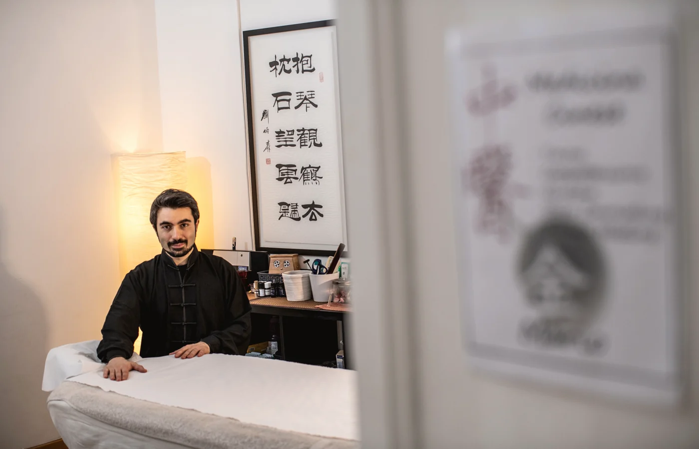
Tradizione e sistema
La Medicina Cinese è una tradizione filosofica e pratica che affonda le radici nel Taoismo e nel Confucianesimo. Legge la persona come totalità, non come somma di disturbi.
Secondo questa prospettiva ogni condizione nasce dall’interazione di elementi diversi: corpo, emozioni, ambiente, abitudini, qualità energetica. Il Qi, principio vitale, scorre attraverso canali e ramificazioni; quando il movimento si altera, il corpo può manifestare tensioni, stasi o segnali di disequilibrio. La pratica non sostituisce la cura medica: accompagna la persona in una lettura più ampia del proprio stato.
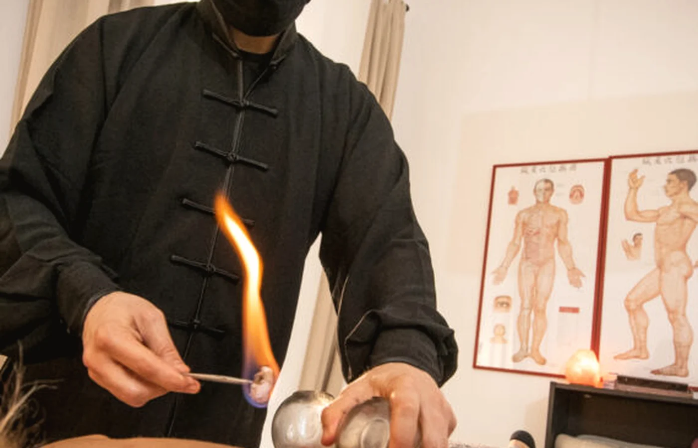
Mobilizzazione dei tessuti
Tecnica complementare non invasiva che consiste nell’applicazione di coppe di vetro sulla pelle, con una piccola suzione generata attraverso il calore.
Nella lettura cinese promuove circolazione energetica, mobilità dei liquidi e del sangue, soprattutto quando emerge un quadro di umidità o ristagno. È sempre inserita in una valutazione più ampia e scelta solo quando coerente con la condizione della persona.
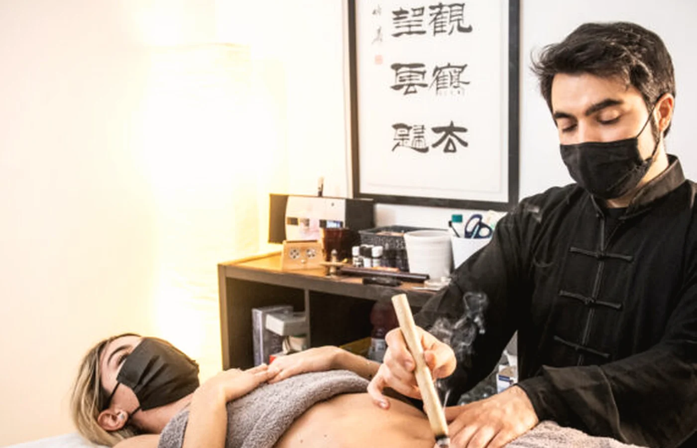
Calore e Artemisia
La moxibustione porta calore su zone specifiche del corpo attraverso lana di Artemisia essiccata, direzionando il calore verso aree o punti precisi.
La tradizione attribuisce all’Artemisia la capacità di sostenere la normale circolazione del Qi e rompere le stasi. Può essere usata in sigari, coni o strumenti che distribuiscono il calore, anche con supporti come aglio o zenzero secondo il caso. Nel percorso viene proposta come sostegno termico e simbolico, non come gesto automatico.
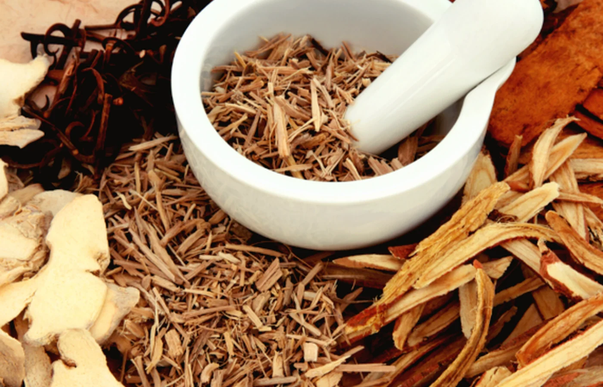
Sostanze naturali e dietetica
La fitoterapia cinese lavora con sostanze naturali secondo una logica energetica, in dialogo con dietetica, costituzione e stile di vita.
Non è un semplice elenco di rimedi: richiede lettura del terreno individuale, precisione e coerenza con il quadro complessivo. Nel percorso viene presentata come ambito di studio, cultura e accompagnamento alla Medicina Cinese, con attenzione a dietetica e stile di vita.
Mente, relazione e parola
Il lavoro sul corpo si intreccia con quello sulla psiche e sulla relazione. Uno spazio di ascolto e parola — individuale e di gruppo — che accompagna la persona nei passaggi di cambiamento, senza sostituire la psicoterapia o un percorso clinico.
Corpo, emozioni e psiche
Nella Medicina Cinese non esiste separazione rigida tra corpo e mente: le emozioni sono movimenti del Qi e ogni organo custodisce una dimensione psichica.
Rabbia, gioia, pensiero, tristezza e paura non sono “problemi” da eliminare, ma energie da riconoscere e riequilibrare.
La tradizione descrive i cinque Shen — Hun, Shen, Yi, Po e Zhi — come una mappa raffinata della vita interiore. Da qui nasce l’attenzione di Mario alla dimensione simbolica e all’inconscio somatico, dove il sintomo diventa anche linguaggio.
Questo sguardo non è diagnosi clinica né psicoterapia: è una chiave culturale ed energetica che accompagna il lavoro corporeo. Per quadri clinici specifici resta opportuno il riferimento a psicologi, psicoterapeuti o medici.
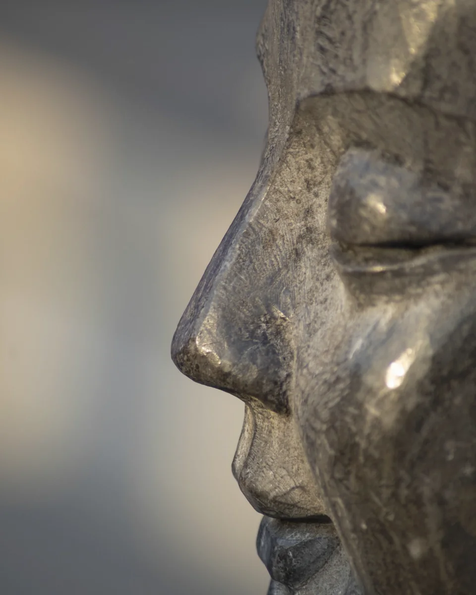
Ascolto e relazione d’aiuto
Il counseling è uno spazio di ascolto strutturato: un dialogo che aiuta la persona a mettere a fuoco una domanda, un passaggio o una difficoltà, facendo leva sulle proprie risorse.
Lo strumento è la parola e la qualità della relazione: domande, rispecchiamenti e messa a fuoco, senza giudizio e nel rispetto dei tempi di ciascuno.
Il counseling lavora sul presente e sulle risorse, non sull’analisi del passato o sulla diagnosi. Può integrarsi con il lavoro corporeo: la parola dà senso a ciò che il corpo racconta, e il corpo dà concretezza a ciò che la parola mette a fuoco.
Non interpreta, non cura e non sostituisce la psicoterapia o il percorso con uno psicologo. Quando serve una presa in carico clinica, il lavoro è orientato verso il professionista più adatto.
Pratica condivisa
Alcuni percorsi prendono forma nel gruppo: incontri tematici dedicati alla Medicina Cinese, al corpo, al respiro e alla dimensione simbolica.
Il confronto con gli altri crea un campo di lavoro protetto, dove esperienza personale e presenza condivisa trovano parola e riconoscimento.
Gli incontri possono unire momenti di pratica corporea ed energetica, esercizi di consapevolezza e respiro, e spazi di dialogo attorno a un tema, in un ritmo che alterna esperienza e riflessione.
Sono pensati sia per chi già segue un percorso individuale e vuole approfondirlo, sia per chi desidera avvicinarsi alla Medicina Cinese e alla cultura che la attraversa. Formati, temi e calendario variano nel tempo: per conoscere le proposte attive è possibile contattare direttamente lo studio.
Domande frequenti
Una guida semplice per comprendere modalità, linguaggio e strumenti del lavoro. Le risposte hanno finalità informative e orientative: non sostituiscono una valutazione personale, una diagnosi o il parere del medico.
Il primo incontro è dedicato all’ascolto, alla raccolta delle informazioni utili e alla comprensione del percorso più adatto. Non è una risposta standard uguale per tutti, ma un momento di orientamento individuale.
La durata può variare in base al tipo di percorso e alle necessità della persona. Per informazioni pratiche e disponibilità è possibile usare la prenotazione online o contattare direttamente lo studio.
Se si dispone di documentazione utile, referti o informazioni pregresse, può essere utile portarli al primo incontro. La valutazione resta comunque individuale e contestuale.
È un sistema di osservazione della persona che considera equilibrio, relazione tra funzioni, energia vitale, contesto e manifestazioni del disagio. Nel sito viene presentata come approccio culturale e professionale, non come promessa terapeutica.
Nel linguaggio della Medicina Cinese il Qi è un concetto centrale, spesso tradotto come energia o soffio vitale. Può essere inteso come una chiave interpretativa della relazione tra corpo, funzioni e movimento.
Il Tuina è una pratica manuale della tradizione cinese che utilizza pressioni, mobilizzazioni e tecniche specifiche secondo i principi della Medicina Tradizionale Cinese. La risposta al trattamento resta sempre legata alla persona e al contesto del percorso.
La moxa è una tecnica tradizionale che utilizza calore localizzato secondo i principi della Medicina Cinese. Nel percorso viene considerata in modo prudente, evitando indicazioni automatiche o promesse di risultato.
La coppettazione è una tecnica tradizionale che utilizza coppette applicate sulla pelle per stimolare determinate zone secondo una logica energetica e funzionale. La scelta della tecnica dipende dalla valutazione complessiva della persona.
La fitoterapia cinese si basa sull’uso di formulazioni e principi tradizionali. Deve essere valutata con attenzione e all’interno di un percorso appropriato, soprattutto in presenza di condizioni mediche, farmaci o terapie in corso.
No. Le informazioni del sito hanno finalità divulgative e orientative. Non sostituiscono diagnosi, visita medica, trattamento sanitario o parere del medico.
Il sito può aiutare a orientarsi sui servizi e sugli approcci, ma non è pensato per valutare sintomi individuali. Per situazioni personali è opportuno prenotare un incontro o rivolgersi al proprio medico.
È possibile usare il calendario online integrato nel sito, oppure contattare direttamente lo studio tramite i canali presenti nella sezione contatti.
Gli articoli e le riflessioni più estese sono disponibili nel blog collegato dal sito. La FAQ rimanda alla sezione Blog e libri per seguire gli aggiornamenti e leggere i contenuti pubblicati.
I libri sono raccolti nella sezione dedicata del sito, con link alle relative schede esterne.
Gli articoli aiutano a comprendere concetti, linguaggio e prospettiva. Un percorso individuale richiede invece ascolto, valutazione e relazione diretta.
È possibile prenotare un incontro o contattare lo studio. La FAQ è uno strumento orientativo e non sostituisce un confronto personale.
Prova con una parola più semplice, scegli una categoria diversa oppure contatta direttamente lo studio.
Vai ai contatti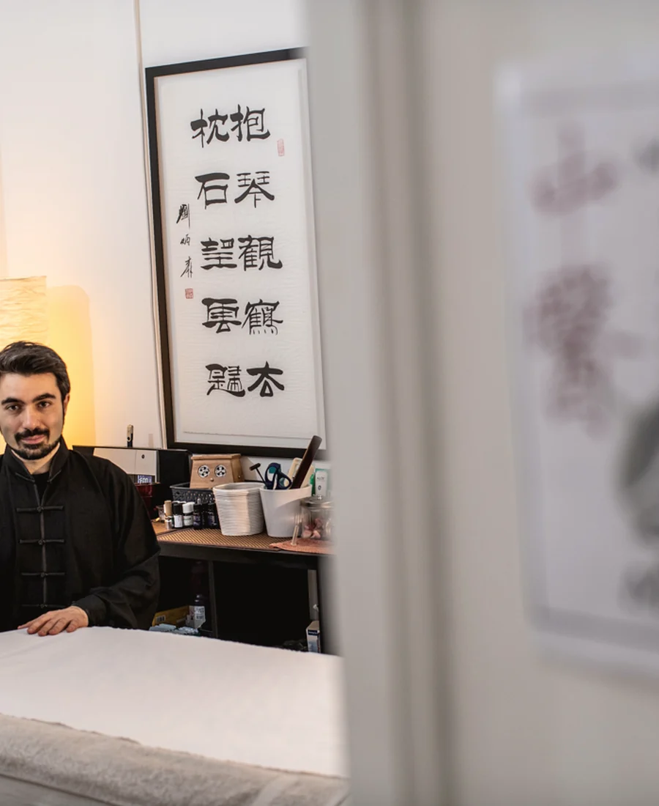
Chi sono
Operatore olistico e Dottore in Scienze e Tecniche Psicologiche, da circa vent’anni si dedica alla cura del corpo, dello spirito e della mente attraverso la medicina cinese.
È iscritto all’APOS, Associazione Professionale Operatori Shiatsu, ed è istruttore di corsi di specializzazione legati alla cultura medica cinese. Ha conseguito il diploma di Tuina e Medicina Cinese, fitoterapia, dietetica e tecniche complementari presso l’Istituto Superiore Villa Giada di Roma.
I viaggi e le esperienze in Cina hanno affinato le tecniche manuali e lo hanno avvicinato alla dimensione energetica e simbolica del lavoro, incontrando anche Pranic Healing, Reiki e pranoterapia.
Pubblicazioni
Scrittura e pratica si tengono insieme: cultura cinese, medicina, corpo, psiche, caratteri e dimensione simbolica.
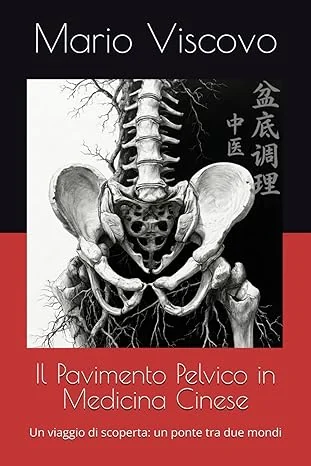
Un viaggio di scoperta: un ponte tra due mondi.
Apri il libro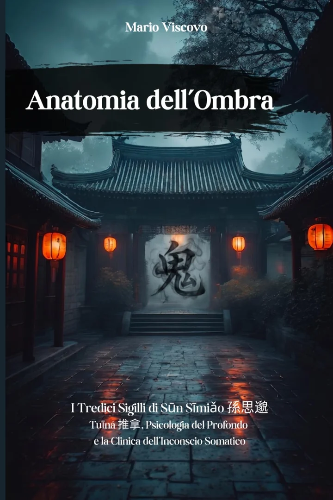
I Tredici Sigilli di Sūn Sīmiǎo, Tuina, Psicologia del Profondo e clinica dell’inconscio somatico.
Apri il libro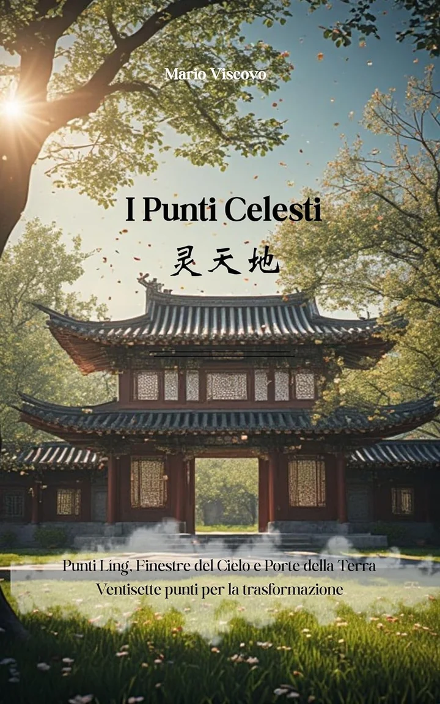
Punti Líng, Finestre del Cielo e Porte della Terra: ventisette punti per la trasformazione.
Apri il libroI contenuti vengono letti dal file locale del sito, senza dipendere dal feed esterno.
Prenotazioni e contatti
Prenota una seduta, richiedi un incontro di counseling o scrivi un messaggio breve per orientare il primo contatto.